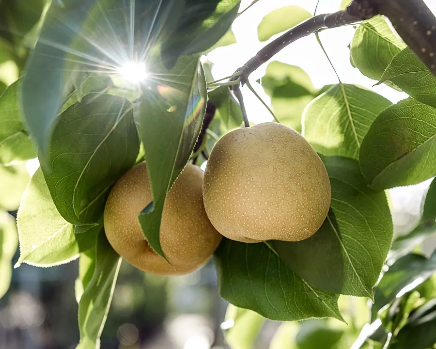

001
001Kindadom – Les Doms d'Alfred
🇧🇪 België · Montzen, Plombières (provincie Luik)
vakantiewoning (voormalig watertorenreservoir)vanaf ca. €30-70 per persoon per nacht (indicatief)
🇦🇹 Oostenrijk · Schwarzenberg, Bregenzerwald (Vorarlberg)
Biologische boerenboerderij in een 300 jaar oud Bregenzerwälder houten huis, midden in een rustig berglandschap. Kinderen kunnen onder begeleiding paardrijden en spelen met pony's, een geit, konijnen, cavia's, kippen en de kat Mitzi. De sfeer is landelijk en persoonlijk, met een goed onderhouden tuin, barbecue en buitenhaard.



001🇧🇪 België · Montzen, Plombières (provincie Luik)
🇫🇷 Frankrijk · Quarante, Languedoc (Occitanie)
 003
003🇫🇷 Frankrijk · Octon, Hérault (Occitanie)
 004
004🇫🇷 Frankrijk · Maussane-les-Alpilles, Provence
Klik op het hartje bij een verblijf om het hier toe te voegen of te verwijderen. Favorieten worden bewaard in je browser op dit apparaat.